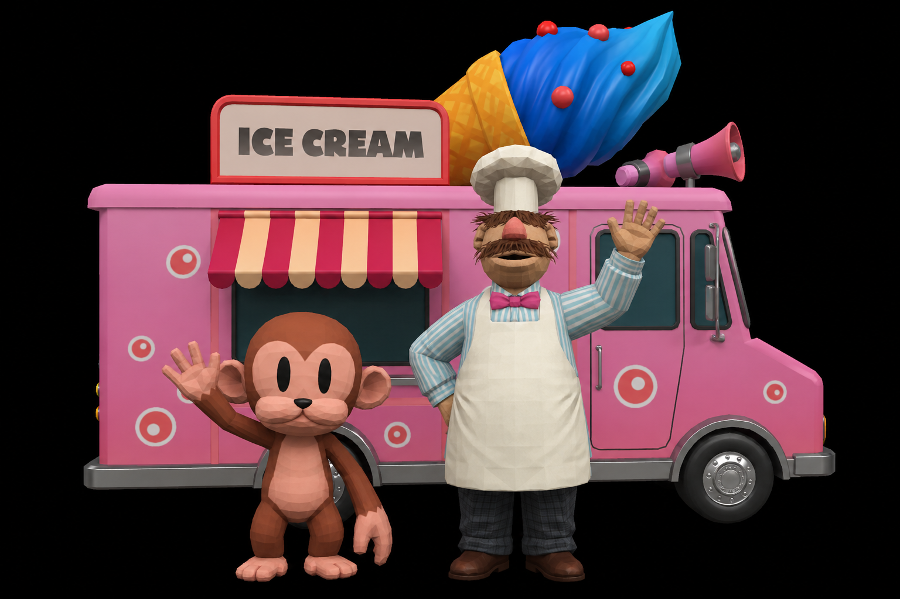
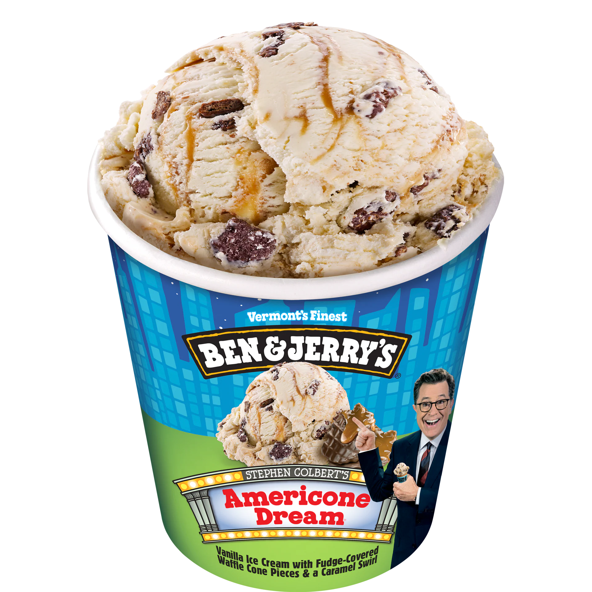

3D SIMULATOR:
BEN & JERRY'S
FLAVOR MENU

By extracting ice cream flavor specifications from the Ben & Jerry's official website into a database, the product data is visualized into a simulating experience for users to explore and learn different experiences offered by this global ice cream brand.
Simulator Components
Interact with the 3D asset pipeline. Click and drag the model to inspect optimization, textures, and geometry used in the final simulation engine.
The Swedish Chef
The official guide of the park sandbox. Users interacte with him to prompt the floating menu interface that displays flavor data and nutritional details directly inside the scene.
The Ice Cream Truck
Parked right by the ice cream man, this nostalgic, low-poly truck brings the iconic Ben & Jerry's look into the environment.
Ice Cream Menu
A static menu board positioned above the counter. It acts as a visual anchor for the shop stall, decorating the park grounds with classic ice cream shop styling.
Chunky Monkey
The simulator's mascot for the B&J Chunky Monkey flavor. He hangs out on the ice creak truck, adding a playful touch of Ben & Jerry's personality to the digital environment.
The Park Grounds
A vibrant, low-poly outdoor playground that features paths, trees, fences, and the serving stand, anchoring all the background elements into one cohesive layout.
Clouds
These low-poly clouds drift over the playground and frame the sky to set the perfect backdrop for Ben & Jerry's ice-cream falvor exploration simiulator.
A deep dive into the JavaScript frameworks and WebGL rendering external libraries powering this simulation.
This asynchronously loaded data is a static JSON dataset (1Mb) containing an array of Ben & Jerry's flavors, description, nutritional info, allergins, and ingredients that come from the Ben & Jerry's official website.
| Thumbnail | Flavor | Calories per serving |
About this Flavor | Ingredients | Allergens | Ratings |
|---|---|---|---|---|---|---|
 |
Americone Dream | 380 | Founded in fudge-covered waffle cones, this caramel-swirled concoction is the only flavor that gets a s'cream of approval from The Late Show host, Stephen Colbert. What's sweeter is this flavor supports charitable causes through The Stephen Colbert AmeriCone Dream Fund. | Buttery Cinnamon Ice Cream with Churro Pieces & Crunchy Cinnamon Swirls | CONTAINS WHEAT, EGG, SOY AND MILK. | 4.6 |
 |
Cherry Garcia | 340 | We named this flavor in 1987 for the legendary American guitarist Jerry Garcia after one of our fans sent us the idea on a postcard, and it's been one of our top hits ever since. We use only pure cream to make the cherry ice cream smooth and sumptuous. Then we lace the ice cream with plump sweet cherries and dark chocolatey chunks. Enjoy! | Cherry Ice Cream with Cherries & Fudge Flakes | CONTAINS EGG, MILK AND SOY. | 4.6 |
 |
Caramel Chocolate Cheesecake | 380 | In your cheesecake dreams, is it like you’re spooning through a world of caramel cheesecake ice cream swirled with chocolate cookies in a wonderland filled with chunks of cheesecake? Hello? You can wake up now… | Caramel Cheesecake Ice Cream with Cheesecake Pieces & Chocolate Cookie Swirls | CONTAINS EGG, MILK, SOY AND WHEAT. | 4.2 |
 |
Chocolate Fudge Brownie | 350 | This fudge-tastic phenomenon has been a part of our flavor family since 1991 & we’ve always used brownies from the Greyston Bakery in Yonkers, New York. Happy days! | Chocolate Ice Cream with Fudge Brownies | CONTAINS EGG, MILK, AND WHEAT. | 4.0 |
 |
Chunky Monkey | 400 | To come up with a flavor as fun as the name, we monkeyed around with bunches of test batches until we knew we had a winner. Simply put, we think it's the best majorly nutty-&-chocolatey-chunky ice cream gone bananas you'll ever go ape for. A final note, just in case you were wondering: this flavor contains no actual monkeys. That would be wrong...not to mention silly. Enjoy! | Banana Ice Cream with Fudge Chunks & Walnuts | CONTAINS MILK, EGGS, WALNUTS AND SOY. MAY CONTAIN OTHER TREE NUTS. | 4.5 |
 |
Half Baked | 370 | Ben & Jerry’s is proud to partner with fellow B Corps Greyston & Rhino Bakeries to bring you half baked. The incredible stories behind both the fudge brownies & cookie dough make this a flavor that not only tastes good, but does good. | Chocolate & Vanilla Ice Creams mixed with Gobs of... Dough & Fudge Brownies | CONTAINS MILK, EGGS, WHEAT AND SOY. | 4.8 |
 |
Milk & Cookies | 380 | How do you take classic milk-&-cookie goodness to a whole 'nother level of greatness? We don’t really know what that means, but we know this flavor’s loaded with the most euphoric assortment of cookies we ever dunked, chunked & swirled in our ice cream. | Vanilla Ice Cream with a Chocolate Cookie Swirl, Chocolate Chip & Chocolate Chocolate Chip Cookies | CONTAINS WHEAT, EGG, SOY AND MILK. | 4.7 |
 |
Phish Food | 390 | “Ben was our neighbor through the woods & we're fond of ice cream. So we teamed up to create Phish Food®. A portion of our royalties from this flavor goes toward environmental efforts in Vermont's Lake Champlain Watershed. Enjoy!” - PHISH Certified Gluten-Free. | Chocolate Ice Cream with Gooey Marshmallow Swirls, Caramel Swirls & Fudge Fish | CONTAINS EGG, MILK AND SOY. | 4.8 |
 |
Vanilla Caramel Fudge | 390 | If you’ve been looking for reasons to try something chunkless, this container holds a Vanilla-rich, fudge-luscious & caramel-gooey pintful of them. Enjoy! Certified Gluten-Free | Vanilla Ice Cream with a Chocolate Cookie Swirl, Chocolate Chip & Chocolate Chocolate Chip Cookies | CONTAINS EGG AND MILK. | 4.7 |
 |
Strawberry Cheesecake | 350 | For strawberry cheesecake lovers who’ve always wanted to have their cheesecake & scoop it, too, we’ve created a flavor jam-packed with strawberry cheesecake-greatness & a fantastic graham-cracker swirl. | Strawberry Cheesecake Ice Cream with Strawberries & a Thick Graham Cracker Swirl | CONTAINS EGG, MILK, SOY AND WHEAT. | 4.2 |
 |
Peanut Butter Cup | 460 | We interrupt our regularly scheduled programming to remind you how much you love ice cream that’s perfectly peanut buttery & peanut butter cuppity at the same time. | Peanut Butter Ice Cream with Peanut Butter Cups | CONTAINS EGG, MILK, PEANUTS AND SOY. | 4.7 |
 |
Netflix & Chilll’d | 400 | There’s something for everyone to watch on Netflix & flavors for everyone to enjoy from Ben & Jerry’s, so we’ve teamed up to bring you a chillaxing new creation that’s certain to satisfy any sweet or salty snack craving. It’s a flavorful world, and everyone is invited to grab a spoon. | Peanut Butter Ice Cream with Sweet & Salty Pretzel Swirls & Fudge Brownies | CONTAINS EGG, MILK, PEANUTS, SOY AND WHEAT. | 4.1 |
 |
Karamel Sutra | 370 | Find your way to the ultimate ice cream experience with our Cores. Whether your primal urges lead you to the center of soft caramel or directly to the fudge chips, you’ll be in total control of your own ice cream destiny. Certified Gluten-Free. | Chocolate & Caramel Ice Creams with Fudge Chips & a Soft Caramel Core | CONTAINS EGG, MILK AND SOY. | 4.5 |
 |
Salted Caramel Core | 360 | Find your way to the ultimate ice cream experience with our Cores. Whether your primal urges lead you to the center of salted caramel or directly to the blonde brownies, you’ll be in total control of your own ice cream destiny. | Sweet Cream Ice Cream with Blonde Brownies & a Salted Caramel Core | CONTAINS EGG, MILK, SOY AND WHEAT. | 4.1 |
 |
New York Super Fudge Chunk | 410 | In 1958, to make a name for ourselves in New York, we picked a New York kind of name and created a flavor packed with more kinds of chunks than ever before. We figured if the flavor was euphoric in New York, it would be everywhere. It was, and it is. Certified Gluten-Free | Chocolate Ice Cream with White & Dark Fudge Chunks, Pecans, Walnuts & Fudge-Covered Almonds | CONTAINS ALMOND, EGG, MILK, PECAN, SOY AND WALNUT. | 4.8 |
 |
Churray for Churros | 380 | When’s the best time to enjoy this cinnamony mix chock full of churros? Any time of day, from breakfast until bed, from now ‘til whenever. It's pretty churr-ific. | Buttery Cinnamon Ice Cream with Churro Pieces & Crunchy Cinnamon Swirls | CONTAINS EGG, MILK, SOY AND WHEAT. | 4.6 |
 |
Tiramisu | 390 | There are so many layers to this mascarpone masterpiece, from the espresso-laced fudge flakes embedded in rich ganache topping to the captivating coffee character of the fudge swirls. We'd say this "pick me up" of a flavor is top tier-amisu! | Mascarpone Ice Cream with Fudge Swirls & Shortbread Pieces Topped with Espresso Fudge Chunks & Chocolatey Ganache | CONTAINS WHEAT, EGG, PEANUTS, SOY AND MILK. | 4.4 |
 |
Gimme S’more | 410 | It’s a gimme: there’s always room for s’more. And we’re pretty sure you’ll want to make s’more room in your freezer for this ‘shmallowy-rich, graham-good-‘n-chocolatey concoction now that it's full time flavor!. | Toasted Marshmallow Ice Cream with Chocolate Cookie Swirls, Graham Cracker Swirls & Fudge Flakes | CONTAINS EGG, MILK, SOY AND WHEAT. | 4.5 |
 |
Honey Graham Latte | 390 | If your caramel latte is a hug in a mug, this flavor is a hug in a ... scoop? Enjoy the cozy comfort of honey graham crackers and cinnamon with every scoop - it's a whole latte yum! | Caramel Coffee Ice Cream with Honey Graham Cracker Swirls & Crunchy Cinnamon Swirls | CONTAINS WHEAT, EGG, SOY AND MILK. | 5.0 |
 |
Topped Mint | 440 | Our mint cookie medley had a moniker modification but will still top all your expectations. It's the same ganache-covered, cookie-swirled minty bliss, & still deserving of the ice cream chef's kiss. | Mint Ice Cream with Chocolate Cookie Swirls & Mint Chocolate Cookie Balls Topped with Chocolatey Ganache & Chocolate Cookies | CONTAINS EGG, MILK, SOY AND WHEAT. MAY CONTAIN PEANUTS AND TREE NUTS. | 4.6 |
 |
Chubby Hubby | 470 | Two tricksters convinced a co-worker this flavor really existed (it didn’t), then felt guilty & made him an actual batch packed with pretzels, peanut butter & fudge. He loved it, so did we, & the rest is history. Enjoy! | Vanilla Malt Ice Cream with Peanutty Fudge-Covered Pretzels with Fudge & Peanut Buttery Swirls | CONTAINS EGG, MILK, PEANUTS, SOY AND WHEAT. MAY CONTAIN TREE NUTS. | 4.4 |